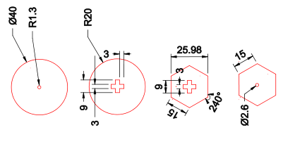
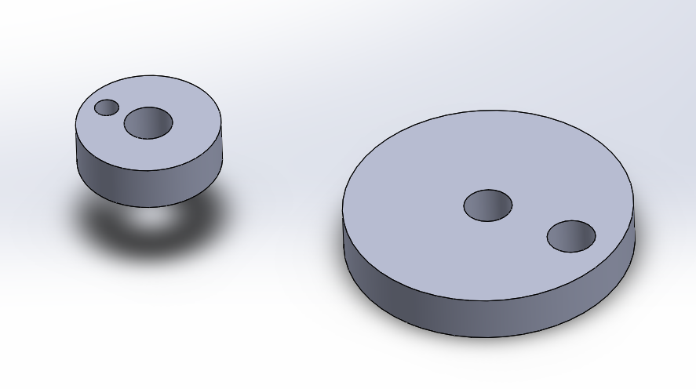
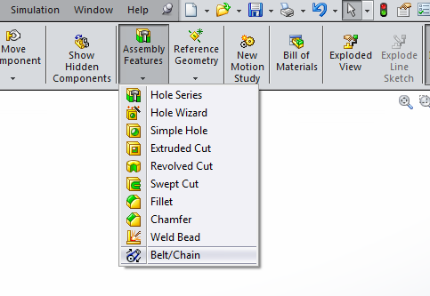
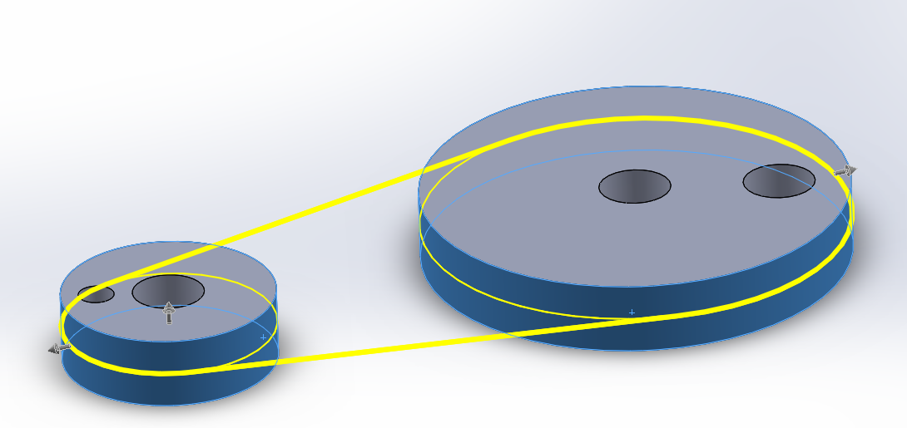
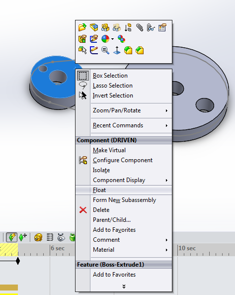

An Introduction to Mechanisms
1 Pulleys
Learn It
- A Pulley is a wheel on a shaft that can move a belt along it's circumference.
- Pulleys can be used to lift loads and transmit motion.

Learn It
- We can use pulleys to increase or decrease the speed of rotary motion.
- Look at the diagram below

- The
driverpulley has a diameter of 40mm and revolves at 100 revolutions per minute (rpm). - The
drivenpulley has a diameter of 120mm - If we want to calculate the rpm of the driven pulley, we first need to find out the
velocity ratio.
- So in this case we can see that…
- The output speed of a pulley system is calculated as follows.
- So in this case we can see that
- So the driven pulley will rotate at 33.3rpm.
Badge It - Silver
- For each of the problems below - draw a diagram of the pulleys described and then calculate the answer.
- A driver pulley has a diameter of 200mm and rotates with a speed of 60rpm. Calculate the speed of a driven pulley with a diameter of 50mm.
- A driver pulley has a diameter of 80mm and rotates with a speed of 250rpm. Calculate the speed of a driven pulley with a diameter of 400mm.
- A driver pulley has a diameter of 100mm and rotates with a speed of 50rpm. Calculate the required diameter of a driven pulley if we want it to rotate at 125rpm.
- We have a driver pulley with a diameter of 60mm. And a driven pulley with a diameter of 20mm. What speed will the driver pulley need if the driven pulley must rotate at a speed of 90rpm?
- A driven pulley has a diameter of 10mm and must rotate at a speed of 100rpm. What diameter will the driver pulley need if it can only rotate at 25rpm?
Design It
- The mechanism you are going to build can either be cranked by hand, or run from a motor using a pulley system.
- In this next activity you are going to build the pulleys for your mechanism.
- Here are the parts for your pulley mechanism.

Badge It - Gold
- Use SolidWorks to draw sketches of the pulley parts above and then extrude them by 3mm.
- Take screenshots of your work and ensure you are including the part that proves your sketch is fully defined.
Learn It
- You can create pulley mechanisms in SolidWorks that actually work.
- Follow the guide below and see if you can create a simple pulley mechanism.
- Firstly you'll need to create a couple of pulley wheels and place them into an assembly as shown below. These pulleys have extra holes, just so that you can see them spinning.

- Now we'll need to make sure they are lined up with each other, by mating two of the faces.

- Next we add a belt. Belts can be found in the
Assembly Featuresmenu.

- Select the curved faces of both your pulleys.

- Lastly we'll need to float the first pulley you placed in the Assembly. At the moment it is fixed and so can't move. Right click on the pulley and select
floatfrom the context menu

- If you want you can now add a motor to the driver pulley, like you did in the cams lesson.
Badge It - Platinum
- Create a pulley mechanism using more than two pulleys.
- Animate the pulleys using a motor for the driver pulley.